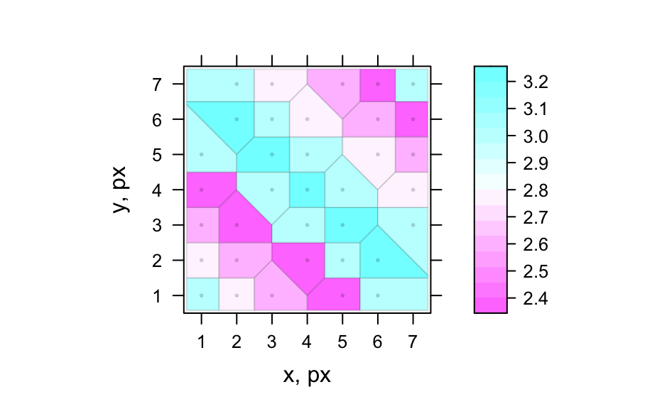
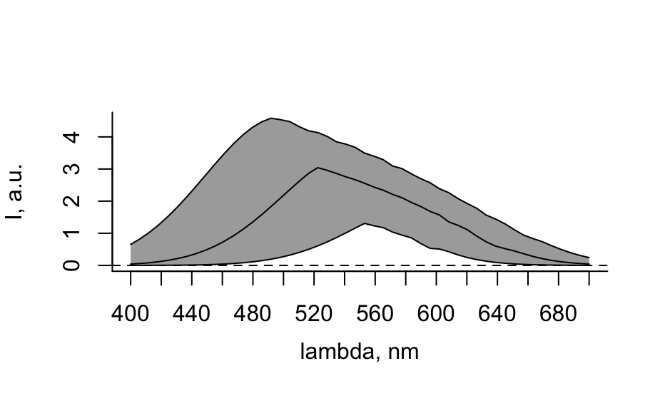
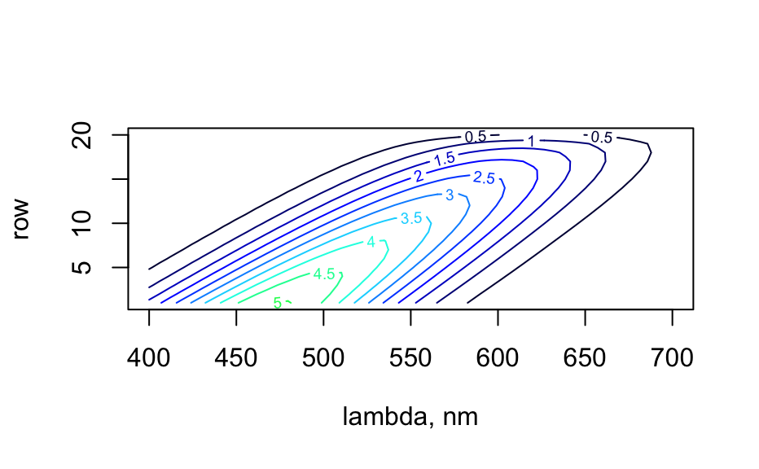

If testthat is available, run the unit tests and
display the results.
hy.unittest()
Value
Invisibly returns a data frame with the test results
Author
Claudia Beleites
Examples
hy.unittest ()#> all_wl: ....... #> wc: SS #> sample data.frame: ... #> .cut.ticks: .. #> mergeextra: ........................S #> count_lines: .. #> guess.wavelength: .... #> read.txt.Witec.Graph: SSSSSS #> Unary arithmetic operators: ............... #> collapse: .................................. #> read.spc: SSSSSSSSSS #> hy.getOptions: ...SSSSSS #> test-read.jdx: SS #> Arithmetic operators, 2 hyperSpec objects: ............................SSS #> read.asc.Andor: S #> .initialize / new ("hyperSpec"): ............................... #> Arithmetic operators, hyperSpec object x: .............................................................................. #> read.txt.Witec: SSSSSSSSSSSS #> .rbind2: ........ #> pearson.dist: . #> bind: ..... #> rbind.hyperSpec: ....... #> .fix_spc_colnames: . #> .sample.matrix: .. #> .fileio.optional: ....S #> .expand helper function for sweep shortcut operators: .......................................... #> spc.fit.poly.below: S...... #> droplevels: ..... #> as.hyperSpec: ................. #> wl2i: S..................S #> spc.NA.approx: .....#> .#> .#> .#> .#> .#> .. #> .DollarNames: ... #> aggregate: ........ #> .sample: ..... #> normalize01: ........... #> stacked.offsets: ..... #> spc.fit.poly: S.... #> merge: .............. #> hy.setOptions: .............................. #> read.ENVI.HySpex: S #> isample: ..... #> .levelplot: .... #> read.dat.Witec: SSSSS #> matrix multiplication: 2 hyperSpec objects: ..... #> matrix multiplication hyperSpec x matrix: .... #> as.wide.df: ..... #> any_wl: ....... #> decomposition: ......... #> wl.eval: ......... #> apply: .... #> .cluster.wavelengths: ... #> read.zip.Renishaw: S #> matrix multiplication: matrix x hyperSpec: .... #> read.spc.Shimadzu: . #> read.ENVI: SSSSS #> spc.rubberband: .... #> read.txt.Renishaw: SSSSS #> vanderMonde: ......#> plotmat: . #> .all.equal: ......... #> .labels: .... #> #> ══ Skipped ═════════════════════════════════════════════════════════════════════ #> 1. wc defaults - Reason: file import test files not installed is not TRUE #> #> 2. wc --lines - Reason: file import test files not installed is not TRUE #> #> 3. x missing labels - Reason: empty test #> #> 4. defaults and (X-Axis)/(Y-Axis) file guessing - Reason: file import test files not installed is not TRUE #> #> 5. encoding - Reason: file import test files not installed is not TRUE #> #> 6. Time Series - Reason: file import test files not installed is not TRUE #> #> 7. Map - Reason: file import test files not installed is not TRUE #> #> 8. missing filename - Reason: file import test files not installed is not TRUE #> #> 9. wrong combination of file names - Reason: file import test files not installed is not TRUE #> #> 10. old file format -> error - Reason: file import test files not installed is not TRUE #> #> 11. SPC SDK example files - Reason: file import test files not installed is not TRUE #> #> 12. LabRam spc files - Reason: file import test files not installed is not TRUE #> #> 13. Shimadzu spc files do not yet work - Reason: file import test files not installed is not TRUE #> #> 14. Witec: some files supported - Reason: file import test files not installed is not TRUE #> #> 15. wplanes - Reason: file import test files not installed is not TRUE #> #> 16. option file.keep.name - Reason: file import test files not installed is not TRUE #> #> 17. option file.remove.emptyspc - Reason: no spc files with empty spectra available so far #> #> 18. hdr2data - Reason: file import test files not installed is not TRUE #> #> 19. log2data - Reason: file import test files not installed is not TRUE #> #> 20. read.spe correctly extracts spectral data from SPE file - Reason: file import test files not installed is not TRUE #> #> 21. read.spe detects an XML footer in SPE 3.0 file - Reason: file import test files not installed is not TRUE #> #> 22. read.spe correctly parses XML footer with SPE 3.0 file and saves metadata in hyperSpec object - Reason: file import test files not installed is not TRUE #> #> 23. .read.spe.xml_string throws error on SPE format below v3.0 - Reason: file import test files not installed is not TRUE #> #> 24. We can correctly read XML footer from SPE3.0 file - Reason: file import test files not installed is not TRUE #> #> 25. .read.spe.xml correctly parses the XML footer and can extract the actual data - Reason: file import test files not installed is not TRUE #> #> 26. JCAMP-DX examples that need particular parameter sets - Reason: file import test files not installed is not TRUE #> #> 27. JCAMP-DX example files - Reason: file import test files not installed is not TRUE #> #> 28. correct results with row-sized object - Reason: empty test #> #> 29. correct results with column-sized object - Reason: empty test #> #> 30. correct results with 1x1 object - Reason: empty test #> #> 31. Andor Solis .asc text files - Reason: file import test files not installed is not TRUE #> #> 32. Map with neither header nor label lines - Reason: file import test files not installed is not TRUE #> #> 33. Map: one of points.per.line and lines.per.image is sufficient - Reason: file import test files not installed is not TRUE #> #> 34. Map with label line but no units header - Reason: file import test files not installed is not TRUE #> #> 35. Map with units header line but no labels - Reason: file import test files not installed is not TRUE #> #> 36. Map with header and label lines - Reason: file import test files not installed is not TRUE #> #> 37. Map can be read as time series - Reason: file import test files not installed is not TRUE #> #> 38. parameter default type = 'single' - Reason: file import test files not installed is not TRUE #> #> 39. Time series with neither header nor label lines - Reason: file import test files not installed is not TRUE #> #> 40. Time series with label line but no units header - Reason: file import test files not installed is not TRUE #> #> 41. Time series with units header line but no labels - Reason: file import test files not installed is not TRUE #> #> 42. Time series with header and label lines - Reason: file import test files not installed is not TRUE #> #> 43. encoding - Reason: file import test files not installed is not TRUE #> #> 44. option treatment - Reason: TODO: implement #> #> 45. no normalization - Reason: empty test #> #> 46. : sequence of wavelengths - Reason: skip #> #> 47. inside extraction - Reason: empty test #> #> 48. no normalization - Reason: empty test #> #> 49. Hyspex ENVI file - Reason: file import test files not installed is not TRUE #> #> 50. -y file guessing - Reason: file import test files not installed is not TRUE #> #> 51. encoding - Reason: file import test files not installed is not TRUE #> #> 52. Time series - Reason: file import test files not installed is not TRUE #> #> 53. Map: .dat does not have spatial information - Reason: file import test files not installed is not TRUE #> #> 54. Map - Reason: file import test files not installed is not TRUE #> #> 55. compressed files - Reason: file import test files not installed is not TRUE #> #> 56. full spectrum BIL - Reason: file import test files not installed is not TRUE #> #> 57. block reading BIL - Reason: file import test files not installed is not TRUE #> #> 58. block reading BIL: block longer than file - Reason: file import test files not installed is not TRUE #> #> 59. Guessing messages - Reason: file import test files not installed is not TRUE #> #> 60. empty spectra - Reason: file import test files not installed is not TRUE #> #> 61. single spectrum - Reason: file import test files not installed is not TRUE #> #> 62. time series spectrum, gzipped - Reason: file import test files not installed is not TRUE #> #> 63. map (= default) - Reason: file import test files not installed is not TRUE #> #> 64. chunked reading - Reason: file import test files not installed is not TRUE #> #> 65. compressed files - Reason: file import test files not installed is not TRUE #> #> ══ DONE ════════════════════════════════════════════════════════════════════════